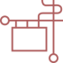

손끝으로 즐거움을 느끼다
뜨개질이란?
뜨개질은 실과 바늘을 이용해 옷감이나 소품을 만드는 방법입니다.
바늘로 실을 걸어 코를 만들고, 그 코를 반복해서 이어가며 형태를 만듭니다.
뜨개질에는 한 가닥의 긴 바늘을
사용하는 대바늘 방법과, 갈고리 모양의 바늘을 사용하는 코바늘 방법이 있습니다.
기본 준비 도구
처음 시작할 때 필요한 핵심 도구입니다.
- 01 바늘 대바늘 또는 코바늘 중 하나를 선택합니다. 중간 굵기의 바늘(4~5mm)을 사용하는 것이 좋습니다.
- 02 실 결이 잘 보이고 갈라짐이 적은 면사나 혼방사를 추천합니다. 코의 모양이 잘 보이는 밝은색 실이 적합합니다.
- 03 돗바늘 뜨개가 끝난 후 남은 실을 편물 사이로 숨겨 정리할 때 사용하는 끝이 뭉툭한 바늘입니다.
- 04 줄자/가위 실의 길이를 재고, 자를 때 필요한 도구입니다.
뜨개질 기본 순서
뜨개질은 다음의 3단계 과정을 거칩니다.
입문자를 위한 주의사항
뜨개 입문자가 알아두면 좋은 기본 가이드입니다.
-

실의 방향
실을 바늘에 감는 방향이 반대로 되면
무늬가 틀어집니다. -
코 수 유지
코가 늘거나 줄지 않도록 매 단마다
개수를 확인합니다. -
모양 확인
몇 단을 떴을 때 틀어진 부분이 있으면
바로 풀고 다시 시작합니다.
이제 직접 시작해 볼까요?